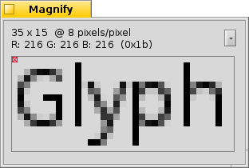

中文 ［中文］
中文 ［中文］ Français
Français Deutsch
Deutsch Italiano
Italiano Русский
Русский Español
Español Svenska
Svenska 日本語
日本語 Українська
Українська Português
Português English
English 外观
外观
| 桌面栏： | ||
| 位置： | /boot/system/preferences/Appearance | |
| 设置： | ~/config/settings/system/app_server/appearance |
外观首选项允许你对 Haiku 的外观做出一些修改。
 颜色
颜色

在第一个标签 中，您可以对用户界面不同部分的颜色做出修改。当然，这些颜色也支持拖拽操作；您从其他程序选取颜色，例如：神笔画具，Icon-O-Matic 或者 背景 面板。
抗锯齿

第二个标签 提供了关于计算机屏幕中图形渲染的不同设置选项。
Glyph hinting
激活的 把所有字符的横边和竖边放置在两个像素中间来排列字符。这样的结果是产生了鲜明的对比，尤其是在处理白底黑字时更加突出。而且文本显得非常整洁。同时还有一个 设置，该设置对于类似于上网本的低分辨率设备非常有用。当字体精调启用之后，小字体的显示效果会很不好，但是文本编辑软件和终端中的字体显示效果将会显著提高。
请看下面不同精调字体经过放大之后的截图：
 Hinting: off |  Hinting: on |
需要指出的是，本页中所有的 放大镜 窗口当然也是通过一些选项实现自我渲染的。所以，你通过对比来获得有关设置的真实印象，例如，粗体的黄色标题或者文本 "33 x 15 @ 8 pixels/pixel"。
抗锯齿类型
另一个可以用于渲染的是 抗锯齿技术 ，它支持所有的矢量字体和文本，通过改变一些像素的颜色来使线条平滑。有两种方法实现抗锯齿类型：
改变边缘像素的灰度。
会有更好的效果，尤其是对于 (高分辨率的) LCD 显示器。因为 LCD 显示器的每个像素是由红，绿，蓝三种基本色组成，所以该方法除了调节边缘像素的灰度，它还改变了边缘像素的部分颜色。
同样的，以上两种方法处理过的字体放大后的截图如下：
Grayscale, Hinting: off | LCD subpixel, Hinting: off |
基于亚像素的抗锯齿技术给其对象添加了轻微的色彩亮度，但不是所有的人都能够忍受这种渲染。在 Haiku 中，你可以混合使用这两种方法，并且可以通过调节滑动条找出适合自己的配置方案。
如果你通过修改源码，再次编译之后，激活了字符精调和LCD亚像素组合渲染技术，那么下面就是它与 Grayscale 渲染的效果对比：
Grayscale, Hinting: on | LCD subpixel, Hinting: on |
在本面板底部有两个按钮：
| 设置所有内容为默认值。 | ||
| 取消设置，恢复到打开外观首选项前的设置状态。 |